Animation Node (Animation)
1. Introduction to the Animation Node
The Animation node is used to create node-based animations, making it easy to generate sprite sheet or frame-by-frame animations. As shown in Animation 1-1, this effect is achieved using an Animation node. For the full API reference, see Animation API.
(Animation 1-1)
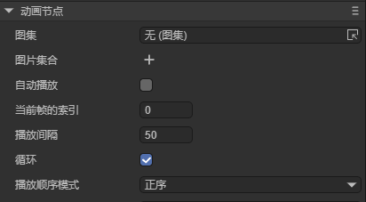
(Figure 1-1)
Common Properties of the Animation Node
| Property | Description |
|---|---|
| source | Add an animation atlas. |
| images | A collection of individual image files. |
| autoplay | Whether to automatically play the animation when added to the stage. Default is false. |
| index | The current frame index. |
| interval | The interval time between frames, in milliseconds. Default is 50ms. |
| loop | Whether the animation loops. Default is true. |
| wrapmode | The playback mode: 0 = forward (POSITIVE), 1 = reverse (REVERSE), 2 = pingpong (PINGPONG). |
2. Creating an Animation Node in LayaAir IDE
2.1 Creating an Animation
As shown in Animation 2-1, an Animation node can be created in the Hierarchy panel by clicking the + button or right-clicking to add it.

(Animation 2-1)
You can also drag an Animation node directly from the Widget panel into the Scene Editor or Hierarchy panel, as shown in Animation 2-2.

(Animation 2-2)
2.2 Loading Animation Data Sources
There are two ways to assign data sources to an Animation: using Images or Source.
2.2.1 Using Images
The first method is through the Images property. You can quickly select multiple images using the ↓ key, or add them manually by clicking, as shown in Animation 2-3.
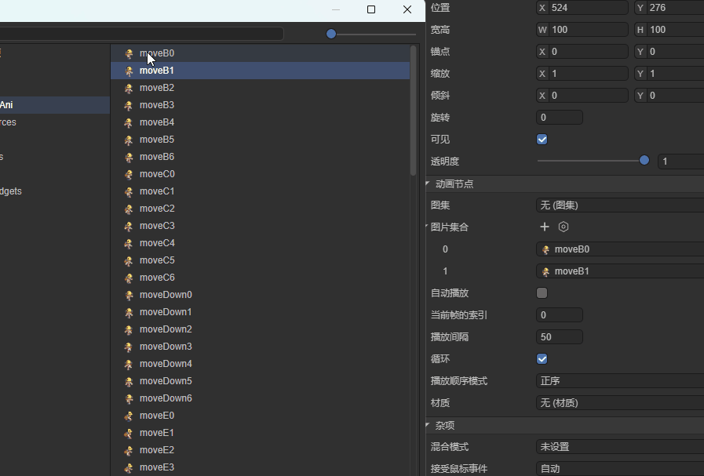
(Animation 2-3)
2.2.2 Using Source
The second and simpler method is to assign a packed atlas directly to the Source property, as shown in Figure 2-4.
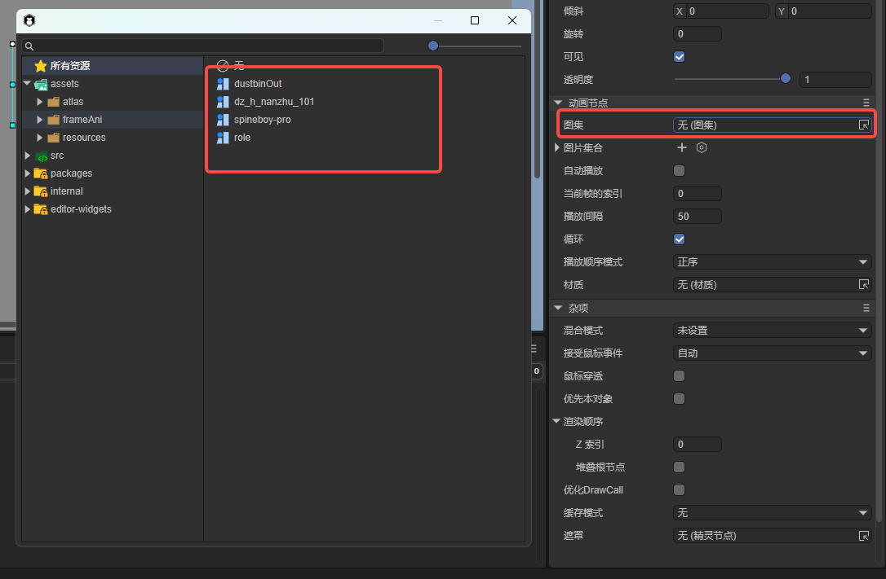
(Figure 2-4)
2.2.3 Creating a Sprite Atlas
Although using an atlas is convenient, developers must first create the atlas themselves. LayaAir IDE provides a built-in Atlas Maker tool. As shown in Figure 2-5, open it from the top menu under Tools → Create Atlas.

(Figure 2-5)
After launching, the Atlas Maker window appears as shown in Figure 2-6.
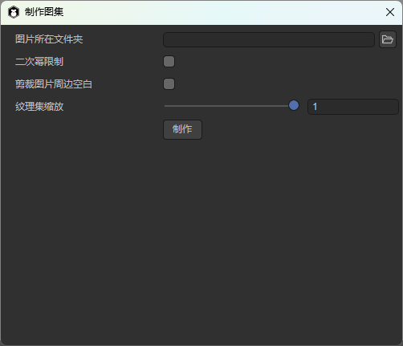
(Figure 2-6)
To create an atlas, place all the images you wish to pack into a single folder (for example, “role”). Then set the Image Folder path to that folder, as shown in Figure 2-7.
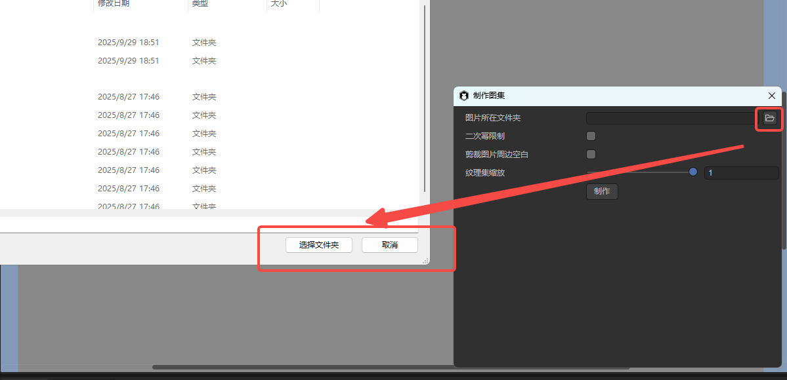
(Figure 2-7)
- Enabling Power of Two Restriction ensures the generated atlas dimensions are powers of two.
- Enabling Trim Transparent Edges makes the atlas image more compact.
Click Create, select an output path, and name your atlas file, as shown in Figure 2-8.
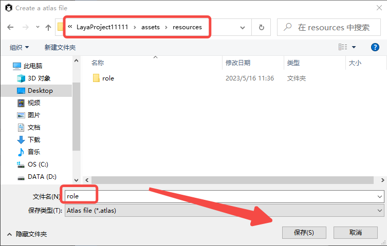
(Figure 2-8)
When the process completes successfully, a “Success!” message appears (Figure 2-9).
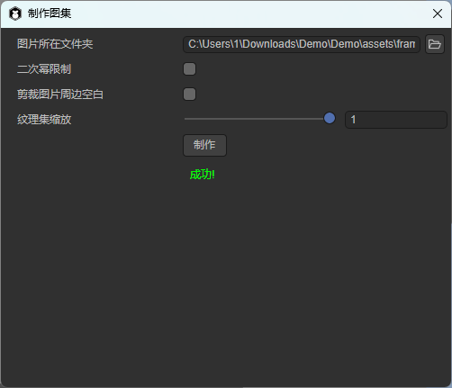
(Figure 2-9)
The output includes a .atlas file and a .png file (for example, role.atlas and role.png). The .atlas file is a LayaAir-specific format used to define atlas metadata.
2.3 Enabling Auto Play (autoPlay)
The autoPlay property determines whether the animation automatically starts playing when added to the stage. The default value is false. When set to true, playback begins automatically upon creation.
2.4 Controlling the Playback Mode (wrapMode)
The wrapMode property defines how the animation plays:
0: Forward (POSITIVE) — default1: Reverse (REVERSE)2: Pingpong (PINGPONG)
Note: To preview playback in the IDE, ensure AutoPlay is enabled.
2.4.1 Forward Playback
When wrapMode = 0, the animation plays in normal order, as shown in Animation 2-10.
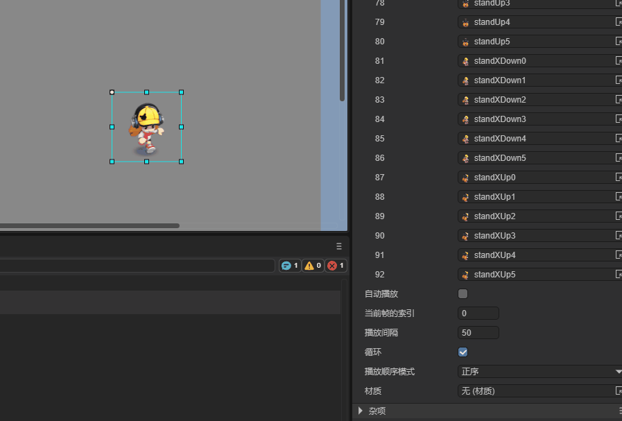
(Animation 2-10)
2.4.2 Reverse Playback
When wrapMode = 1, frames play in reverse order, as shown in Animation 2-11.
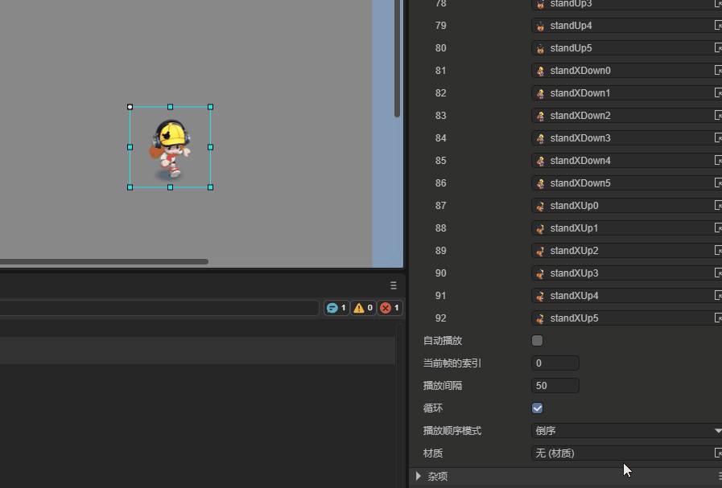
(Animation 2-11)
2.4.3 Pingpong Playback
When wrapMode = 2, the animation plays forward and then backward (like a ping-pong motion), producing a smoother and more continuous effect. This mode is widely used in games as it provides natural looping with fewer assets. See Animation 2-12.
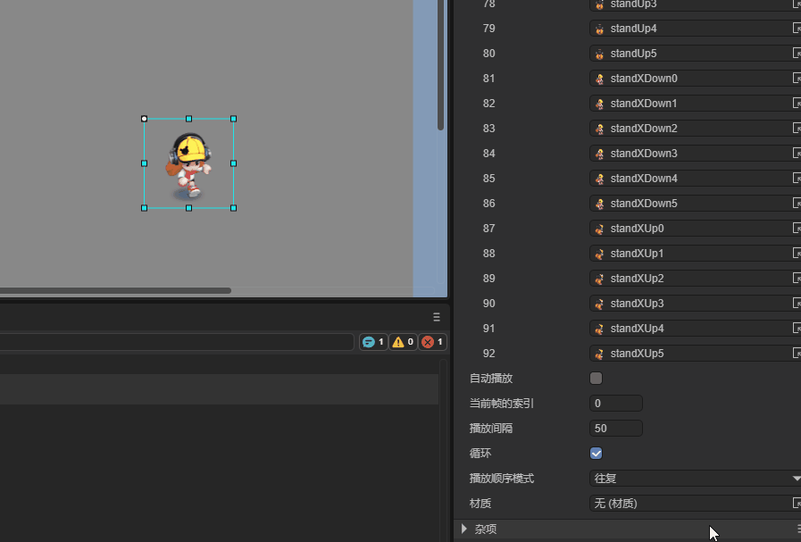
(Animation 2-12)
2.5 Frame Interval (interval)
The interval property controls the time between frames, in milliseconds. The default value is 50ms. For example, doubling it to 100ms slows playback by half, as shown in Animation 2-13.
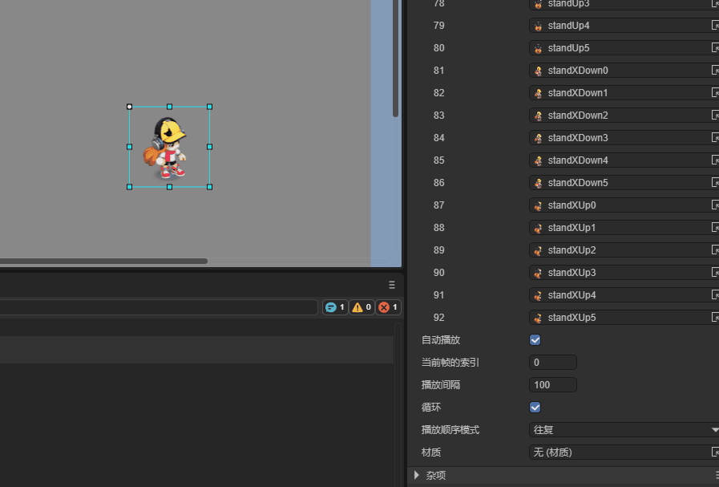
(Animation 2-13)
Tips: Changing the interval frequently during playback can cause timing issues or slow frame updates.
2.6 Setting the Starting Frame (index)
The index property specifies the current frame index (default: 0). Setting it jumps to a specific frame, as shown in Animation 2-14.

(Animation 2-14)
Tips: This property is typically used for manual frame control (e.g., via code or user input). It does not affect the starting frame of auto-play animations.
2.7 Controlling Animation via Script
In the Scene2D property panel, attach a custom script named Animation.ts and drag the Animation node into its exposed property field, as shown in Animation 2-15.

(Animation 2-15)
Example code for controlling the animation:
const { regClass, property } = Laya;
@regClass()
export class Animation extends Laya.Script {
@property({ type: Laya.Animation })
ani: Laya.Animation;
onAwake(): void {
this.ani.source = "resources/role.atlas"; // Load atlas as source
this.ani.autoPlay = true; // Enable autoplay
this.ani.wrapMode = 0; // Forward playback
this.ani.interval = 50; // 50ms frame interval
}
}
Result shown in Animation 2-16:

(Animation 2-16)
3. Creating an Animation via Code
If you want to create an animation dynamically instead of pre-placing it in the scene, you can create it in code. Add a custom script in Scene2D and write the following:
const { regClass, property } = Laya;
@regClass()
export class UI_Animation extends Laya.Script {
onAwake(): void {
this.setup();
}
private setup(): void {
const animation = new Laya.Animation();
animation.pos(200, 200);
animation.source = "resources/role.atlas";
animation.size(600, 275);
animation.interval = 100;
animation.autoPlay = true;
animation.wrapMode = 2; // Pingpong mode
this.owner.addChild(animation);
}
}
The resulting effect is shown in Animation 3-1:
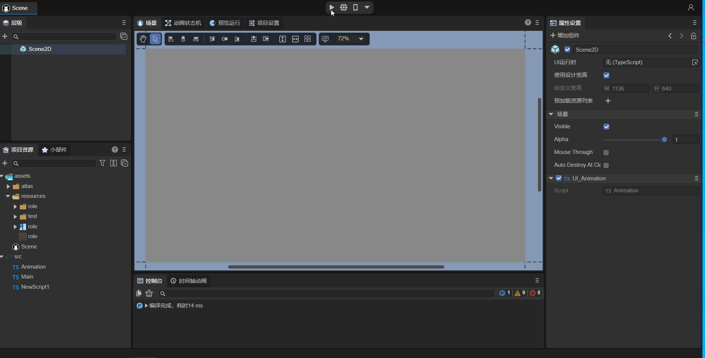
(Animation 3-1)